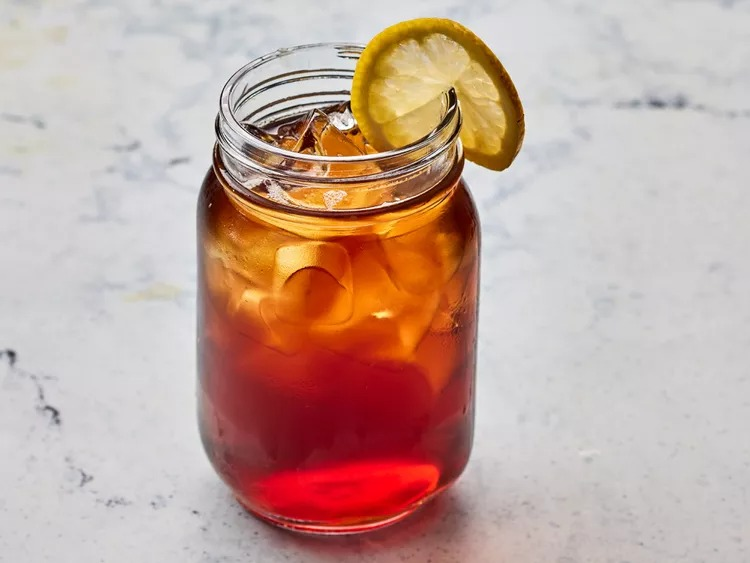

Smooth Sweet Tea is a classic iced tea brewed to be bold yet incredibly easy to drink. Unlike regular iced tea where sugar is added to cold water, "Sweet Tea" is made by dissolving sugar into the hot tea during the brewing process, creating a perfectly infused, syrupy sweetness that doesn't settle at the bottom.
It is deeply refreshing with a mellow, caramel-like sweetness and a clean finish. The cold temperature and the citrus notes make it the perfect companion for a heavy meal (like your Lasagna!).